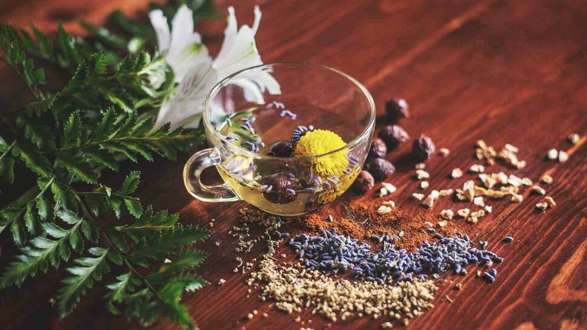
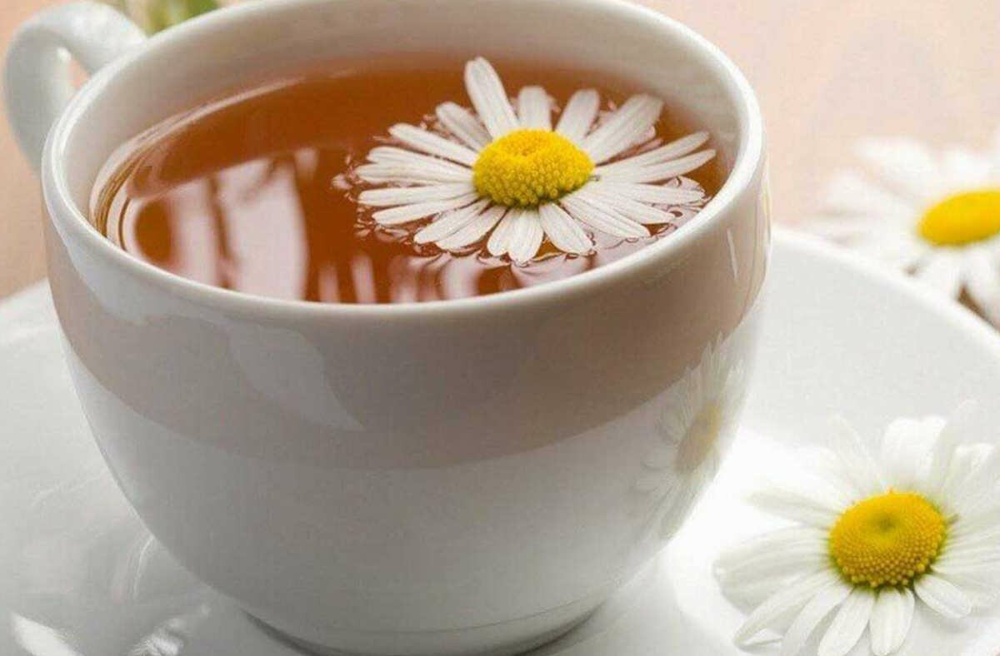
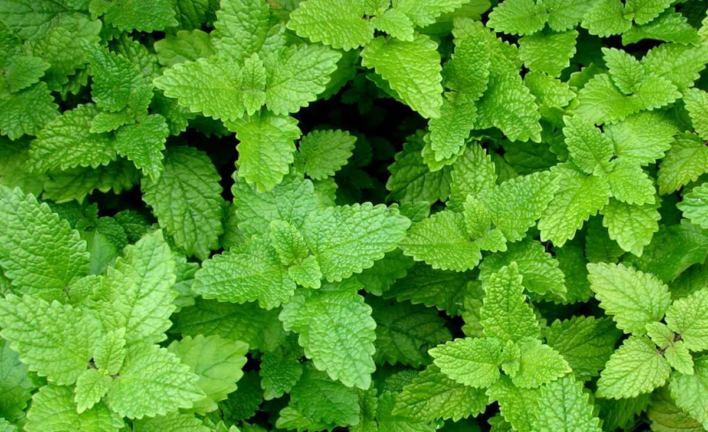
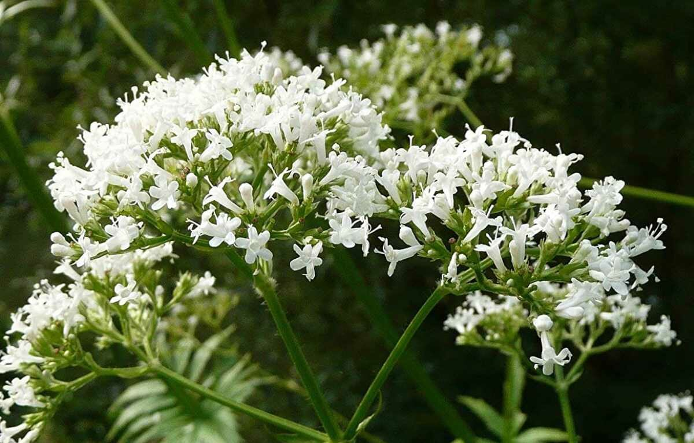
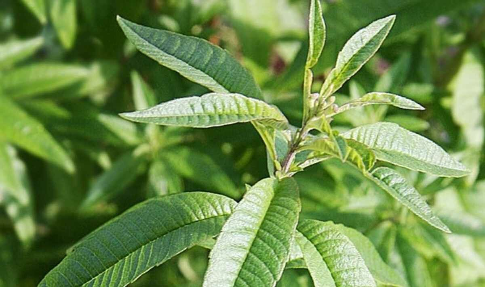
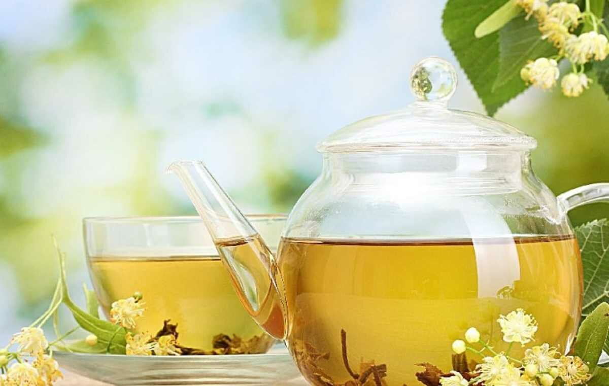

Quelles tisanes et quelles plantes pour bien dormir ?

Fonction essentielle du rythme biologique, le sommeil permet au corps et à l’esprit de se ressourcer, nous laissant reposé et alerte au réveil. Un sommeil sain aide également le corps à rester en bonne santé et à éviter les maladies. Bien que la fonction du sommeil soit encore mystérieuse sur de nombreux points, on sait qu‘avec un sommeil insuffisant, le cerveau ne peut pas fonctionner correctement.
Le sommeil est un état caractérisé par une réactivité réduite aux stimuli sensoriels, une activité locomotrice supprimée et une réversibilité rapide à l'éveil. Il s’agit d’un processus évolutif conservé dans la majorité des organismes, des vers (animaux invertébrés) aux humains. Chez l'homme, il comporte plusieurs étapes, chacune avec des signatures électroencéphalographiques (EEG) caractéristiques et distinctives (endormissement, sommeil lent léger, sommeil lent profond, sommeil paradoxal).

Sommaire
- Boire une tisane, une infusion, du thé pour dormir ?
- Phytothérapie : gélules et plantes pour dormir naturellement
- Les remèdes naturels pour bien dormir - Vidéo
- Quelle est la plante la plus efficace pour dormir ?
- Comment bien dormir sans médicaments ? - Vidéo
- La tisane du soir pour retrouver le sommeil et stimuler la mélatonine ?
- Quelle tisane donner à bébé pour dormir ?
- Sources
Boire une tisane, une infusion, du thé pour dormir ?

En France, une personne sur trois est concernée par un trouble du sommeil. (hypersomnie, parasomnie, insomnie, réveils nocturnes, etc.) [1]. L’insomnie, qui est le trouble le plus courant, est un trouble du sommeil déstabilisant et peut être caractérisée par une incapacité à s’endormir, une durée de sommeil inadéquate et des réveils multiples pendant la nuit. La prise en charge des troubles du sommeil est souvent un travail participatif, pluridisciplinaire où presque toutes les spécialités médicales sont visées en association avec les somnologues (ou hypnologues) et psychologues spécialisés dans l’insomnie.
Cependant, en fonction de la gravité du trouble du sommeil, il est possible en première intention de se faire prescrire par un professionnel de la santé des traitements phytothérapeutiques (médicaments à base de plantes, plantes médicinales, plantes en extraits liquides). La phytothérapie est une médecine douce utilisée depuis des siècles, et les tisanes en prévention pour traiter divers troubles du sommeil sont très courantes. D’ailleurs, de nombreuses études scientifiques et études cliniques passent en revue les vertus des plantes médicinales étudiées expérimentalement ou cliniquement pour les troubles du sommeil, ainsi que leurs mécanismes d'action potentiels et leurs composants actifs.
Dans le langage courant, il n’est pas rare d’utiliser les termes « tisane » ou « infusion » pour désigner le même produit. Et, en effet, ces deux termes sont des synonymes. La tisane est une boisson qui contient une substance végétale que l’on obtient par macération, infusion, ou décoction, dans de l’eau chaude ou froide, et qui a pour objectif un effet médical ou hygiénique.
Par ailleurs, le thé [2], qui est une autre forme d’infusion, est une boisson préparée spécifiquement avec des feuilles de thé infusées provenant du théier. Bien que le thé soit une infusion de feuilles de thé séchées, ce n’est pas une tisane. Comme le café [3], il est principalement utilisé pour son effet stimulant contre la somnolence grâce à l’action de la théine, alors que les différentes tisanes sont généralement consommées pour se relaxer, réguler le sommeil, ou faciliter l’endormissement et la digestion.
Phytothérapie : gélules et plantes pour dormir naturellement
La tisane du soir pour retrouver le sommeil et stimuler la mélatonine ?

Verveine, valériane, passiflore, tilleul ou camomille pour dormir ?
Camomille : tisane de fleurs de camomille
Les fleurs de camomille (famille des Astéracées) sont utilisées pour traiter divers problèmes, notamment le manque de sommeil et passer une nuit calme. Il existe plusieurs espèces de camomille dont la Matricaria chamomilla (camomille matricaire ou camomille allemande), l’Anthemis arvensis (camomille des champs), ou la Chamaemelum nobile (camomille romaine). La camomille matricaire est réputée pour son goût et ses effets.

La camomille (les fleurs de camomille en particulier) contient plusieurs composés chimiques actifs (apigénine, etc.) qui a un léger effet tranquillisant une fois qu'il se lie aux récepteurs des benzodiazépines (médicaments du groupe des sédatifs et des anxiolytiques) dans le cerveau. Même si la recherche (études scientifiques et études cliniques) sur la camomille (infusion de fleurs de camomille matricaire ou romaine) est encore imitée, il a été démontré que la camomille a des vertus calmantes et améliore la qualité du sommeil. [8]
Lavande : tisane de fleurs de lavande
La lavande (Lavandula angustifolia) est une plante à fleurs violettes ou mauves utilisée pour ses vertus calmantes depuis l'empire romain très odorantes. Boire de la lavande sous forme d’infusion (infusion de fleurs de lavande) est une routine nocturne relaxante connue depuis plusieurs siècles pour ses propriétés sédatives.
Cependant, comme pour la plupart des suppléments à base de plantes, les recherches sur l'efficacité de la lavande (fleurs de lavande et huile essentielle de lavande) en tant qu'aide au sommeil sont limitées. Toutefois, il a été démontré que l'huile essentielle de lavande prise comme supplément oral améliore la qualité et la durée du sommeil, et peut améliorer l’humeur. Une goutte d'huile essentielle peut parfois être ajoutée à une tisane. Mais attention, les recommandations d'utilisation des huiles essentielles, comme l’huile essentielle de lavande, sont à respecter scrupuleusement.
Mélisse : tisane de feuilles de mélisse
La mélisse (Melissa officinalis) [9] fait partie de la famille de la menthe et a une odeur légèrement sucrée et citronnée. Les formes les plus courantes de mélisse sont la tisane et l'huile essentielle.

Historiquement, la mélisse (feuilles de mélisse) a été utilisée comme médicament antiviral et antibactérien pour traiter les infections et les virus. Boire une tasse de tisane à la mélisse le soir peut réduire les symptômes associés à l’insomnie et permettre de passer une nuit calme. La mélisse pourrait également aider à réduire l'anxiété et la dépression. [10]
Passiflore : tisane de fleurs de passiflore
La passiflore (Passiflora incarnata) est aussi connue sous le nom de « fleur du fruit de la passion » ou « grenadille » comme la camomille. La passiflore contient certains flavonoïdes qui se lient aux mêmes récepteurs cérébraux que les benzodiazépines et peuvent aider à réduire les symptômes d'anxiété.
Seule ou en association avec d’autres plantes, la tisane de passiflore peut aider à mieux dormir. [11]
Valériane : tisane de racine de valériane pour une nuit calme
La racine de valériane (Valeriana officinalis) est utilisée pour aider à l’endormissement et réduire le stress [12]. Plante faisant l’objet de nombreuses études, la valériane calme l'organisme. En particulier, la racine de valériane est utilisée pour traiter les problèmes qui ont un impact sur le sommeil, tels que le stress, la nervosité, les maux de tête et les palpitations cardiaques. La recherche démontre qu'un extrait de racine de valériane peut améliorer le sommeil sans les effets secondaires des somnifères traditionnels.

Du fait de son odeur et son goût terreux, la racine de valériane est parfois consommée avec d’autres plantes (avec une combinaison de mélisse et à base de valériane par exemple) ou agrémentée de miel. Une tisane à base de valériane calme les agitations avant le coucher pour passer une nuit récupératrice. Cette infusion peut être faite maison ou à partir de sachets de tisane, en privilégiant une tisane bio.
Magnolia : tisane d’écorce de magnolia
L'écorce de magnolia (Magnolia ×wieseneri) est une plante traditionnelle utilisées en médecine chinoise pour favoriser le sommeil depuis des milliers d'années. Les magnolias se trouvent principalement à l'Est et au Sud de l’Asie, mais certaines espèces de cette plante sont aussi disponibles dans l'Est de l'Amérique du Nord, en Amérique centrale, en Amérique du Sud et aux Antilles.
Il a été démontré que son composé principal, l’honokiol (composé chimique), réduit le temps nécessaire pour s'endormir en se liant aux récepteurs GABA dans le cerveau, qui aident à accélérer le sommeil. [13]
Verveine : tisane de fleurs et de feuilles de verveine odorante citronnelle
La verveine (Aloysia citriodora) est une plante populaire utilisée dans le monde entier pour le traitement de plusieurs maladies. La verveine odorante (verveine odorante citronnée, verveine citronnelle ou verveine du Pérou) peut être consommée sous forme d’infusion, de teinture-mère, de poudre ou de crème de soin.

La verveine odorante citronnée offre de multiples avantages pour la santé soutenus par la science, notamment des effets antitumoraux, une protection des cellules nerveuses et des propriétés de réduction de l'anxiété et des convulsions. Par contre, les études sur la verveine citronnelle sont essentiellement réalisées à partir d'extrait de verveine odorante citronnée. [14]
Tilleul : bienfaits de la tisane de tilleul (fleurs et bractées)
Le tilleul (Tilia cordata) est traditionnellement utilisé en tisanes ou en bains de tilleuls pour soulager les troubles du sommeil et apaiser l'agitation chez les adultes et les enfants. Les bienfaits de la fleur de tilleul englobent également des propriétés contre les spasmes et la fièvre. La quercétine et le tiliroside, deux antioxydants contenus dans le tilleul, peuvent aider à réduire la douleur.

Néanmoins, des recherches supplémentaires sont nécessaires pour déterminer la quantité à consommer pour une tisane ou à utiliser lors de bains de tilleul pour profiter de cet avantage potentiel. Les bienfaits du tilleul favorisent le sommeil (tisanes de tilleul et bains de tilleuls), mais la manière dont il exerce cet effet est limitée à des preuves anecdotiques et manque de recherches scientifiques.
Sources
- Sommeil. Faire la lumière sur notre activité nocturne. Inserm. https://www.inserm.fr/dossier/sommeil/
- Thé : bienfaits et méfaits pour la santé. https://www.le-guide-sante.org/actualites/nutrition/the-bienfaits-mefaits-sante-nutrition
- Médecine douce : le guide des médecines douces. https://www.le-guide-sante.org/actualites/forme-et-bien-etre/medecines-douces-guide-recommandations
- Café : bienfaits et méfaits sur la santé. https://www.le-guide-sante.org/actualites/nutrition/cafe-bienfaits-mefaits-sante-nutrition
- Guadagna S, Barattini DF, Rosu S, Ferini-Strambi L. Plant Extracts for Sleep Disturbances: A Systematic Review. Evid Based Complement Alternat Med. 2020;2020:3792390. Published 2020 Apr 21. doi:10.1155/2020/3792390
- Valerian for Sleep: A Systematic Review and Meta-Analysis. (études sur la tisane à base de valériane pour être plus calme et passer une meilleur nuit). https://www.amjmed.com/article/S0002-9343(06)00275-0/fulltext
- Koulivand PH, Khaleghi Ghadiri M, Gorji A. Lavender and the nervous system. Evid Based Complement Alternat Med. 2013;2013:681304. doi:10.1155/2013/681304
- Chamomile: A herbal medicine of the past with a bright future (Review). 2010. https://doi.org/10.3892/mmr.2010.377
- Miraj S, Rafieian-Kopaei, Kiani S. Melissa officinalis L: A Review Study With an Antioxidant Prospective. J Evid Based Complementary Altern Med. 2017;22(3):385-394. doi:10.1177/2156587216663433
- Conseils et astuces contre la dépression saisonnière : nutrition et mode de vie. https://www.le-guide-sante.org/actualites/medecine/depression-saisonniere-conseils-astuces-nutrition-sante
- Guerrero FA, Medina GM. Effect of a medicinal plant (Passiflora incarnata L) on sleep. Sleep Sci. 2017;10(3):96-100. doi:10.5935/1984-0063.20170018
- Le stress : définition, causes, symptômes et comment le gérer https://www.le-guide-sante.org/actualites/forme-et-bien-etre/stress-definition-causes-symptomes-comment-gerer
- Woodbury A, Yu SP, Wei L, García P. Neuro-modulating effects of honokiol: a review. Front Neurol. 2013;4:130. Published 2013 Sep 11. doi:10.3389/fneur.2013.00130
- Buchwald-Werner S, Naka I, Wilhelm M, Schütz E, Schoen C, Reule C. Effects of lemon verbena extract (Recoverben®) supplementation on muscle strength and recovery after exhaustive exercise: a randomized, placebo-controlled trial. J Int Soc Sports Nutr. 2018;15:5. Published 2018 Jan 23. doi:10.1186/s12970-018-0208-0
- Kyrou I, Christou A, Panagiotakos D, Stefanaki C, Skenderi K, Katsana K, Tsigos C. Effects of a hops (Humulus lupulus L.) dry extract supplement on self-reported depression, anxiety and stress levels in apparently healthy young adults: a randomized, placebo-controlled, double-blind, crossover pilot study. Hormones (Athens). 2017 Apr;16(2):171-180. doi: 10.14310/horm.2002.1738. PMID: 28742505.